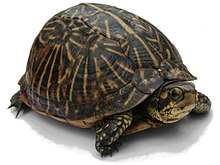

Maltese dog
From: Wikipedia: Maltese dog

The Maltese had been recognized as an FCI breed under the patronage of Italy in 1954, at the annual meeting in Interlaken, Switzerland. The current FCI standard is dated November 27, 1989, and the latest translation from Italian to English is dated April 6, 1998.[citation needed] The American Kennel Club recognized the breed in 1888,[6] its latest standard being from March 10, 1964. Parti-colour and solid colour dogs were accepted in the show ring from 1902 until 1913 in England,[7] and as late as 1950 in Victoria, Australia.[8] However, white Maltese were required to be pure white. Coloured Maltese could be obtained from the south of France.[8] Little is known about the origin and spread of the Maltese dog. It probably did not originate from the island of Malta, the town of Melita in Italy, nor the island of Melita in the Adriatic, but from spitz-type dogs in south-central Europe, where it may at first have resembled the modern Pomeranian.[3]
Cockatiel
From: Wikipedia: Cockatiel

The cockatiel's distinctive erectile crest expresses the animal's emotional state. The crest is dramatically vertical when the cockatiel is startled or excited, gently oblique in its neutral or relaxed state, and flattened close to the head when the animal is angry or defensive. The crest is also held flat but protrudes outward in the back when the cockatiel is trying to appear alluring or flirtatious. When the cockatiel is tired, the crest is seen positioned halfway upwards, with the tip of the crest usually curling upward.[8] In contrast to most cockatoos, the cockatiel has long tail feathers roughly making up half of its total length. At 30 to 33 cm (12 to 13 in), the cockatiel is the smallest of the cockatoos which are generally larger at between 30 and 60 cm (12 and 24 in). Wild cockatiels, Australia The "normal grey" or "wild-type" cockatiel's plumage is primarily grey with prominent white flashes on the outer edges of each wing. The face of the male is yellow or white, while the face of the female is primarily grey or light grey, and both sexes feature a round orange area on both ears, often referred to as "cheddar cheeks". This orange colouration is generally vibrant in adult males, and often quite muted in females. Visual sexing is often possible with this variant of the bird. Cockatiels are relatively vocal birds, the calls of the male being more varied than that of the female. Cockatiels can be taught to sing specific melodies and speak many words and phrases. They have also learned to imitate certain human or environmental sounds without being taught how to do so.
Turtle
From: Wikipedia: Turtle
Turtles are reptiles of the order Testudines characterized by a special bony or cartilaginous shell developed from their ribs and acting as a shield.[3] "Turtle" may refer to the order as a whole (American English) or to fresh-water and sea-dwelling testudines (British English).[4] The order Testudines includes both extant (living) and extinct species. The earliest known members of this group date from the Middle Jurassic,[1] making turtles one of the oldest reptile groups and a more ancient group than snakes or crocodilians. Of the 356 known species[2] alive today, some are highly endangered.[2] Turtles are ectotherms—animals commonly called cold-blooded—meaning that their internal temperature varies according to the ambient environment. However, because of their high metabolic rate, leatherback sea turtles have a body temperature that is noticeably higher than that of the surrounding water. Turtles are classified as amniotes, along with other reptiles, birds, and mammals. Like other amniotes, turtles breathe air and do not lay eggs underwater, although many species live in or around water. A group of turtles is known as a bale.[5]